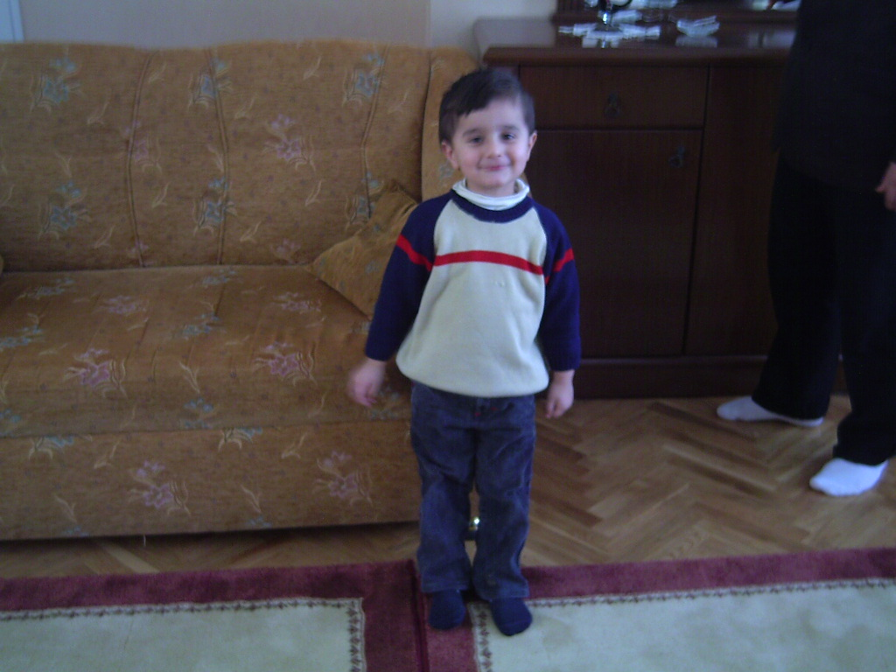
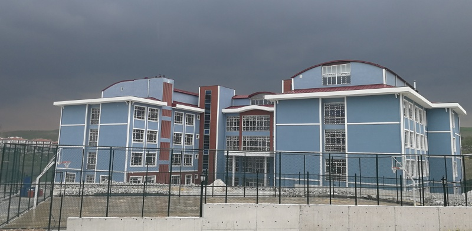
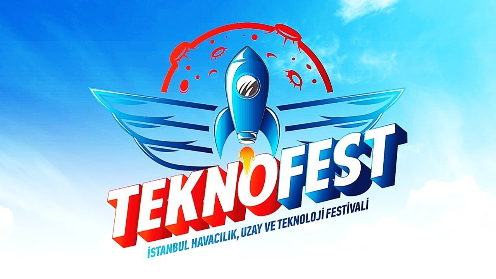

Babam ben küçük yaştayken bir market işletiyormuş bundan ötürü kimsenin evinde bilgisayar yokken bizim evdeki bilgisayar marketin excelini tutuyormuş bunun üzerine başlayan bilgisayar sevdam lise yıllarıma kadar devam edip beni meslek seçimi yaparken yakalayıp o gün bilgisayar mühendisliği seçmeme neden oldu ve bu yola başlamış oldum

Bendeniz
Ankara'ya taşındığımız zamanlar feridun çelik mahellesinde oturduğumuz için ortamın ve mahalle kültürünün müsaitliğinden dolayı bende ülkemizin birçok çocuğu gibi futbolla alakalı günler geçirdim ardından biraz yaş aldıktan sonra basketbola merak saldım hatta hala bu braşta iddalıyımdır
Tabi ister istemez biraz bilgi vermek gerekiyor aslında bu kadarı bile bence yeterli ama biraz da lise yıllarımdan bahsedeyim.Lisede benim aslında bu tür yönelimler yapmamın esas nedeni lise yıllarımda tanıştığım , edindiğim arkadaşlar oldu tabi bunlar arasında dönüp baktığımızda şimdi herkes bu pandemi sürecinden dolayı dağılmış durumda ama yapacak bir şey malesef ki yokken

Bu güzide lisemiz
Bu yıl malesef okula gelip kimseyle konuşmadığımız kaynaşmadığımız için okulun içerisinde olan etkinliklere fazla katılamadık ama az önce de bahsettiğim lise arkadaşlarımla beraber hep bir şeyler yapmaya çalışırdık ama okulumuzun bu konuda bizlere desteği azdı malesef biz birkaç proje çıkartmak istememize rağmen malesef sadece bir arkdaşımız teknofeste ve geçen sene de benim memleketim olan antepte gerçeklemesi de benim için bir yara olmuştu

Aslında arkadaşımın yaptığı projeyi koyacaktım ama fotoğrafı bulamadım
Şöyle baktığınızda çok sade bir hayat gibi gözüksede herkes gibi benimde kendi içimde arkadaşlarımla olsun ailelmle olsun kendime göre bir hayatım var ve süregelmeye devam ediyor